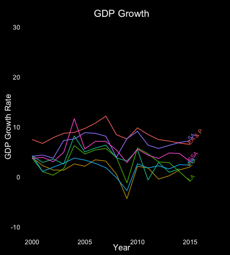
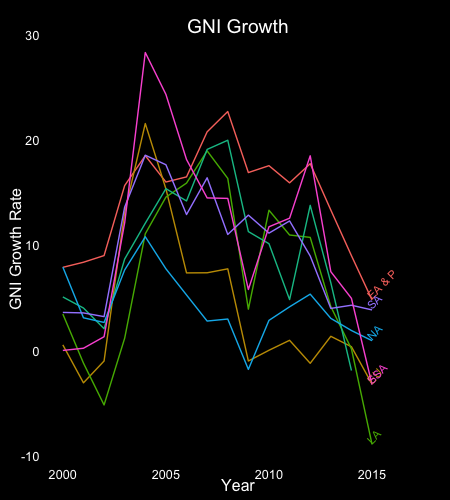
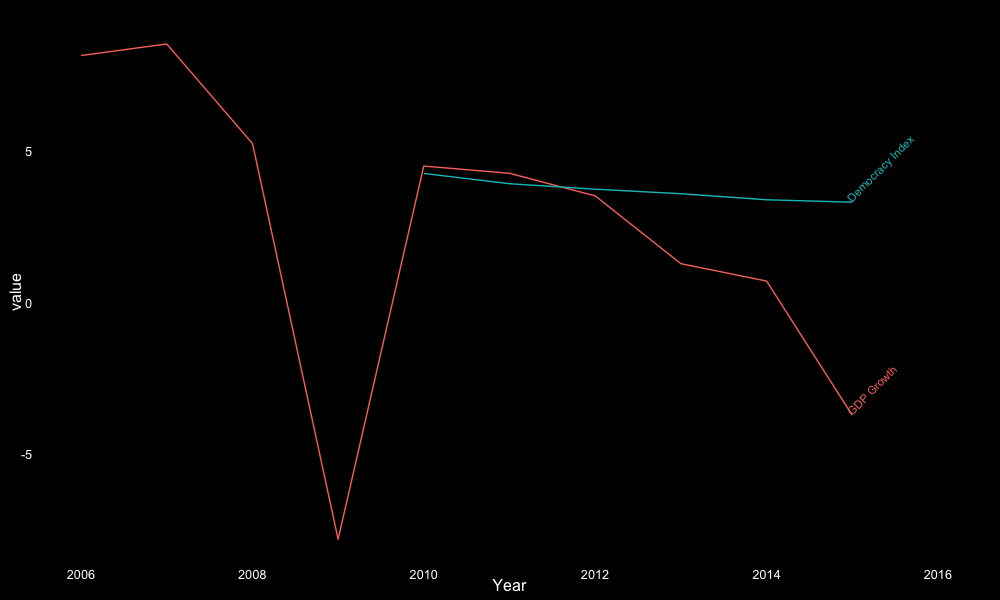

The
Economic Growth Lab
A presentation by Shaua Fui, Elisa, Archimedes, and Mark
Historical GDP per Capita
Data from the Maddison Project

Main Indicators
- GDP Growth (Annual %)
- GNI Growth (Atlas, Annual %)
GDP v. GNI
$GDP = C + G + I + (X - M)$
$GNI = GDP + (P_i - P_e)$
GDP Growth (Annual %)
GDP Growth Equation: $\frac{GDP_Q - GDP_{Q-4}}{GDP_{Q-4}} \times 100\%$
- Annual percentage growth rate of GDP at market prices based on constant local currency.
- Aggreates based on constant 2010 U.S. Dollars
Basic Statistics
GDP Growth Statistics - 2000 & 2015 Comparison
| Year | Min | Max | Mean | Median | SD |
|---|---|---|---|---|---|
| 2000 | -14.267 (Solomon Islands) | 28.616 (Liberia) | 4.238 | 4.214 | 4.271 |
| 2015 | -20.349 (Macao) | 12.393 (West Bank & Gaza) | 2.562 | 2.982 | 4.019 |
GDP Growth By Region From 2000 to 2015
High income countries excluded from East Asia and Sub-Saharan Africa

GNI Growth (Atlas, Annual %)
GNI Growth Equation: $\frac{GNI_Q - GNI_{Q-4}}{GNI_{Q-4}} \times 100\%$
Atlas Method
Uses a 3-year average of exchange rates to smooth effects of transitory exchange rate fluctuations, adjusted for the difference between the rate of inflation in the country and that in a number of developed countries
GNI Growth By Region From 2000 to 2015
High income countries excluded from East Asia and Sub-Saharan Africa

Comparison
Scall adjusted
 Year 2015 - Worldbank Data
| Rank | GDP Growth | GDP | GNI Growth | GNI |
|---|---|---|---|---|
| 1 | West Bank & Gaza | United States | Congo Rep. | United States |
| 2 | Ethiopia | China | Equatorial Guinea | China |
| 3 | Palau | Japan | Ethiopia | Japan |
| -3 | Equatorial Guinea | Dominica | Belarus | Dominica |
| -2 | Sierra Leone | Palau | Libya | Kiribati |
| -1 | Macao | Kiribati | Ukraine | Palau |
Which indicator to choose?
Basic Correlations Between Growth and Other Variables
Include only variables with < 20% missing data. Correlations are imperfect because all rows of matrix with missing observations are simply removed
> names(cortest)
[1] "iso2c" "country" "year" "GDP Growth" "GDP-PC"
[6] "Inflation" "Infant Mortality" "School Enrollment"
> cor(cortest[, 4:8], use="complete")
GDP Growth GDP-PC Inflation Infant Mortality School Enrollment
GDP Growth 1.00000000 -0.3539726 0.09820048 0.4736165 -0.1341191
GDP-PC -0.35397258 1.0000000 -0.30223000 -0.5479866 0.1980190
Inflation 0.09820048 -0.3022300 1.00000000 0.2720608 -0.0475518
Infant Mortality 0.47361650 -0.5479866 0.27206082 1.0000000 -0.4759349
School Enrollment -0.13411906 0.1980190 -0.04755180 -0.4759349 1.0000000

Indexes That "Correct GDP"
- The Index of Sustainable Economic Welfare
- Green GDP
- Genuine Savings
Indexes That Do Not Use GDP
- Ecological Footprint
- Subjective Well-Being
- Gross National Happiness
Composite Indexes
Including GDP
- Human Development Index
- Living Planet Report
- Happy Planet Index
The Harrod-Domar Growth Model
“To grow, economies must save and invest a certain portion of their GDP. But the rate at which they can grow for any level of saving and investment - how much additional output can be had from an additional unit of investment - can be measured by the inverse of the capital-output ratio.”
The rate of growth of GDP is determined joinly by the net national savings ratio and the national-capital output ratio
Inclusive Institutions As Engines of Prosperity
“Countries differ in their economic success because of their different institutions, the rules influencing how the economy works, and the incentives that motivate people.”
State Fragility Index
- Annual state fragility, effectiveness, and legitimacy indices for 167 countries with populations greater than 500,000
- 8 component indicators
Correlation Between Institution Indices and GDP Growth, 1995 - 2014
Data From the Worldbank and Center for Systemic Peace
> growthFragile <- `SFIv2014(1)_final_change.filter`
> growthFragile <- growthFragile[, c(2,4,6,7,8)]
> cor(growthFragile[sapply(growthFragile, is.numeric)], use = "complete")
GDP sfi effect legit
GDP 1.0000000 0.1390962 0.1266773 0.1364937
sfi 0.1390962 1.0000000 0.9513013 0.9343862
effect 0.1266773 0.9513013 1.0000000 0.7790605
legit 0.1364937 0.9343862 0.7790605 1.0000000
Development As Freedom
“Development entails a set of linked freedom.”
Democracy Index
- Compiled by the Economist Intelligence Unit
- Based on 60 indicators in five different categories measuring pluralism, civil liberties, and political culture.
Russia - Growth vs Democracy
Data from the Worldbank and the Economist
